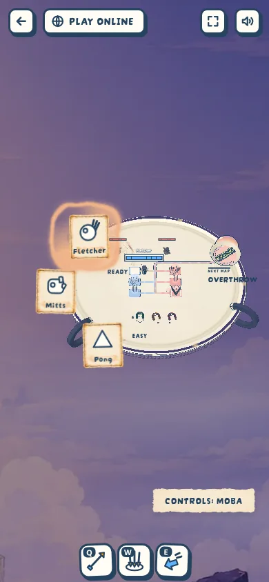
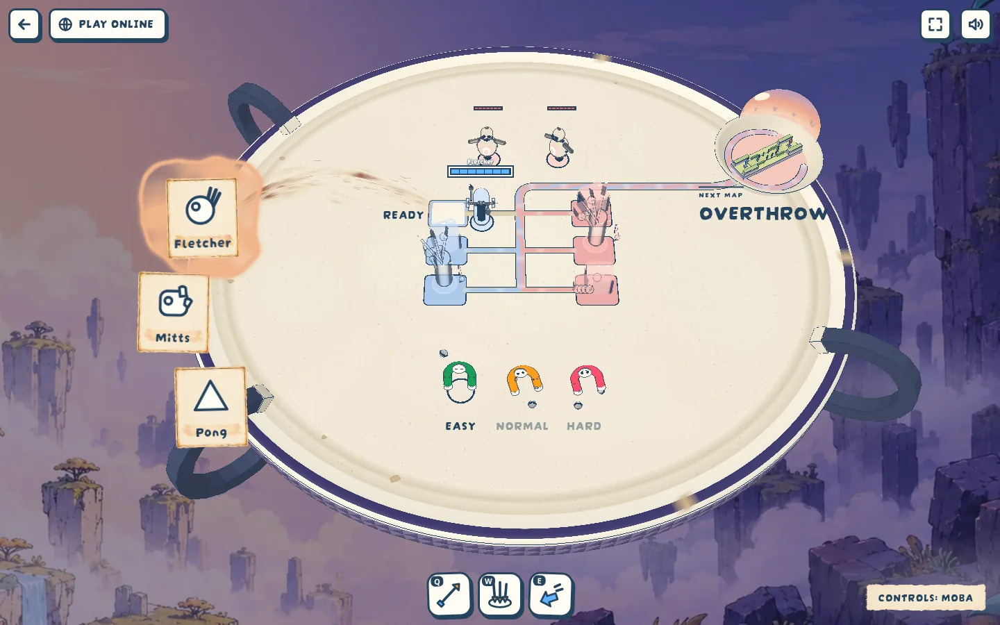
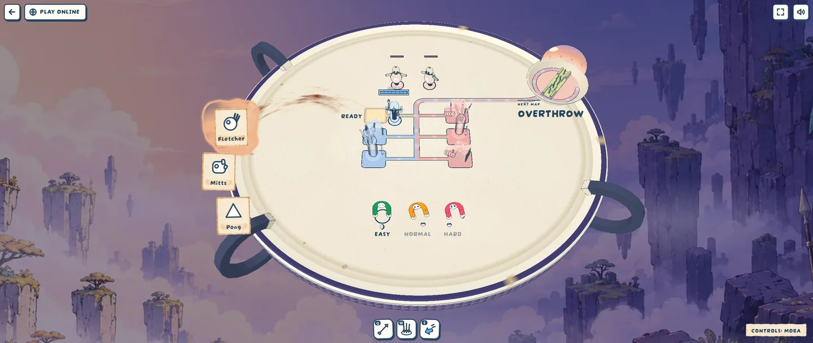

Lobby feel: the swap flip and a calmer layout (#5)
Decided · 2026-10-14 · thr_rrr3ahmeiy
Does the flip read as a cutout turning on a pin? The clip runs three swaps slowed to 1.2 s, then two at the real 0.25 s. The stills are the lobby from a fresh / at 390, 1440 and 2560×1080: at 390 the difficulty words no longer run together, health bars shrink and the controls label clears the ability bar; at wide screens 'Next map' no longer spills over the rim.


